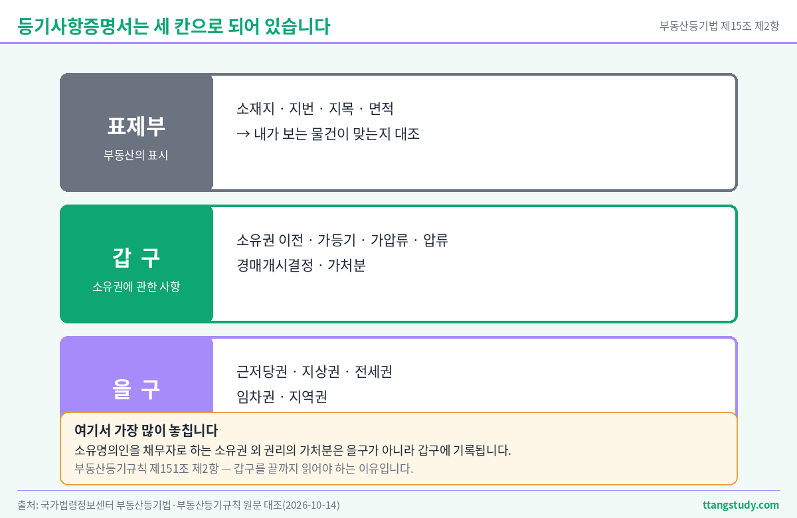

권리·계약 법령 가이드
등기사항증명서 읽는 법, 공유지분으로 할 수 있는 일과 없는 일, 특약의 한계

등기부등본 보는 법 — 표제부·갑구·을구에 무엇이 적히는가
| 항목 | 기준 | 근거 조문 |
|---|---|---|
| 등기기록의 구성 | 표제부(부동산 표시) / 갑구(소유권) / 을구(소유권 외의 권리) | 부동산등기법 제15조 제2항 |
| 등기기록의 단위 | 1필지 또는 1건물에 1개 (물적 편성주의) | 부동산등기법 제15조 제1항 |
| 소유명의인을 채무자로 하는 소유권 외 권리 가처분 | 갑구에 기록 | 부동산등기규칙 제151조 제2항 |
| 가등기 | 본등기의 순위는 가등기의 순위에 따름 — 순위만 소급 | 부동산등기법 제88조 · 제91조 |
| 등기 없이 효력이 발생하는 경우 | 상속 · 경매 · 수용 · 판결 | 민법 제186조 · 제187조 |
| '등기부등본'이라는 이름 | 현재 정식 명칭은 등기사항증명서 | 부동산등기법 부칙(2011.4.12) 제5조 제1항 |
공유지분 매매 — 혼자 할 수 있는 것과 없는 것
| 행위 | 필요한 동의 | 근거 |
|---|---|---|
| 자기 지분의 처분(매도·담보 제공) | 없음 — 혼자 할 수 있음 | 민법 제263조 |
| 지분 비율에 따른 전부의 사용·수익 | 없음 | 민법 제263조 |
| 공유물의 처분·변경 | 다른 공유자 전원의 동의 | 민법 제264조 |
| 관리에 관한 사항 | 지분의 과반수 | 민법 제265조 |
| 보존행위 | 없음 — 각자 할 수 있음 | 민법 제265조 |
| 분할 청구 | 없음 — 단독 청구 가능 (5년 내 부분할 약정 가능) | 민법 제268조 |
| 협의가 안 될 때 | 재판상 분할, 현물분할이 곤란하면 경매 | 민법 제269조 |
등기부등본 확인 순서 — 계약 전에 볼 것
- 등기사항증명서를 발급해 표제부부터 대조합니다. 소재지·지번·지목·면적이 검토 중인 물건과 일치하는지 봅니다(부동산등기법 제19조 제1항).
- 갑구에서 소유권의 흐름과 가등기·가압류·가처분을 봅니다. 소유명의인을 채무자로 하는 소유권 외 권리의 가처분은 을구가 아니라 갑구에 기록되므로(등기규칙 제151조 제2항), 갑구를 끝까지 읽어야 합니다.
- 을구에서 소유권 외의 권리를 봅니다 — 근저당권·지상권·전세권 등.
- 등기를 믿어도 되는지 따집니다. 법률행위로 인한 물권변동은 등기해야 효력이 생기지만(민법 제186조), 상속·경매·수용·판결은 등기 없이 효력이 발생합니다(제187조). 등기에 나타나지 않은 권리자가 있을 수 있습니다.
- 지분 거래라면 공유자 수와 지분 구조를 확인합니다. 지분만 사면 땅의 처분·변경에는 전원 동의가 필요하고(제264조), 관리는 지분 과반수로 결정됩니다(제265조).
- 특약은 임의규정의 범위에서만 효력이 있습니다(민법 제105조). 반사회질서(제103조)·불공정(제104조) 행위는 무효이고, 매도인이 알고도 고지하지 않은 사실은 담보책임 면제 특약으로도 면책되지 않습니다(제584조).
등기부등본·공유지분에서 자주 어긋나는 네 지점
"가등기는 순위도 효력도 소급한다"
본등기를 하면 순위만 가등기 순위로 소급합니다(부동산등기법 제88조·제91조).
"가처분은 을구에 있다"
소유명의인을 채무자로 하는 소유권 외 권리의 가처분은 갑구에 기록됩니다(부동산등기규칙 제151조 제2항).
"위약금 특약은 적은 대로 받는다"
위약금은 손해배상액의 예정으로 추정되고, 예정액이 과다하면 법원이 감액할 수 있습니다(민법 제398조 제2항·제4항).
"지분이라도 내 땅이니 내가 쓰면 된다"
지분 비율로 사용·수익할 수는 있지만(제263조), 공유물의 처분·변경에는 다른 공유자 전원의 동의가 필요합니다(제264조). 지분을 쪼개 파는 영업 형태가 많은 이유이기도 합니다.
용어별 상세
등기부등본
정식 명칭은 등기사항증명서 — 갑구·을구 구분은 법률에 직접 적혀 있습니다
이름부터 바뀌었습니다
2011년 4월 12일 부동산등기법 전부개정(법률 제10580호)으로 등기부등본이라는 용어는 등기사항증명서로 바뀌었습니다. 그 부칙 제5조 제1항은 "다른 법령에서 등기부등본 또는 초본을 인용한 경우에는 등기사항증명서를 인용한 것으로 본다"고 정했고, 부칙 제4조에서 국유재산법·민사집행법·공인중개사법 등 여러 법률의 "등기부등본"을 일괄 개정했습니다.
「부동산등기법」 제19조① 누구든지 수수료를 내고 대법원규칙으로 정하는 바에 따라 등기기록에 기록되어 있는 사항의 전부 또는 일부의 열람과 이를 증명하는 등기사항증명서의 발급을 청구할 수 있다. 다만, 등기기록의 부속서류에 대하여는 이해관계 있는 부분만 열람을 청구할 수 있다.
현행 부동산등기법·부동산등기규칙 본문에 "등기부등본"은 한 번도 나오지 않습니다(부칙의 개정 지시문에만 남아 있습니다). 다만 개인정보 보호법 시행령 제29조의3처럼 정비되지 않은 하위법령과 일부 별지서식에는 아직 그 표현이 남아 있어, "현행 법령에 전혀 없다"고까지 말하면 정확하지 않습니다.
표제부·갑구·을구 — 근거는 법률 제15조 제2항
「부동산등기법」 제15조② 등기기록에는 부동산의 표시에 관한 사항을 기록하는 표제부와 소유권에 관한 사항을 기록하는 갑구(甲區) 및 소유권 외의 권리에 관한 사항을 기록하는 을구(乙區)를 둔다.
흔히 부동산등기규칙 제13조를 근거로 드는데, 규칙 제13조는 각 구에 어떤 란(欄)을 두는지만 정합니다 — 갑구와 을구에는 순위번호란·등기목적란·접수란·등기원인란·권리자 및 기타사항란을 둔다는 식입니다. 갑구 = 소유권, 을구 = 소유권 외의 권리라는 구분 자체는 법률에 있습니다.
같은 조 제1항은 물적 편성주의를 정합니다 — 1필의 토지 또는 1개의 건물에 대하여 1개의 등기기록을 둡니다 (구분건물은 1동 전부에 1개).
| 구분 | 기록되는 사항 | 근거 |
|---|---|---|
| 표제부(토지) | 표시번호, 접수연월일, 소재와 지번, 지목, 면적, 등기원인 | 법 제34조 |
| 표제부(건물) | 표시번호, 접수연월일, 소재·지번·건물명칭 및 번호, 종류·구조·면적, 등기원인, 도면번호 | 법 제40조 제1항 |
| 갑구·을구 공통 | 순위번호, 등기목적, 접수연월일 및 접수번호, 등기원인 및 그 연월일, 권리자 | 법 제48조 제1항 |
권리자가 2인 이상이면 지분을 기록하고, 합유인 때에는 그 뜻을 기록합니다(법 제48조 제4항).
어디에 무엇이 적히는가 — 가등기·가압류·가처분
- 가등기 — 법 제88조에 따라 권리의 설정·이전·변경·소멸의 청구권을 보전하려 할 때 합니다. 법 제91조는 "본등기의 순위는 가등기의 순위에 따른다"고만 정합니다. 순위가 소급할 뿐 물권변동 시점이 소급한다는 규정은 없습니다. 기록 위치는 대상 권리에 따라 갑구(소유권이전청구권)나 을구(저당권 등)로 갈립니다 — 전용 조문은 없고 제15조 제2항의 원칙에 따릅니다.
- 가처분 — 부동산등기규칙 제151조 제2항에 명문이 있습니다. 피보전권리가 소유권 이외의 권리설정등기청구권이면서 소유명의인을 가처분채무자로 하는 경우에는 그 가처분등기를 갑구에 합니다. 내용상으로는 을구가 맞지만 규칙이 명문으로 예외를 둔 것입니다.
- 가압류·경매개시결정 — 민사집행법 제293조·제94조에 따라 법원사무관등의 촉탁으로 기입됩니다. 갑구에 한다는 명문 조문은 없고, 소유권의 처분제한에 관한 사항이므로 제15조 제2항의 성질상 갑구에 기록됩니다.
등기를 믿어도 되는가 — 공신력 문제
「민법」 제186조(부동산물권변동의 효력) 부동산에 관한 법률행위로 인한 물권의 득실변경은 등기하여야 그 효력이 생긴다.
제187조(등기를 요하지 아니하는 부동산물권취득) 상속, 공용징수, 판결, 경매 기타 법률의 규정에 의한 부동산에 관한 물권의 취득은 등기를 요하지 아니한다. 그러나 등기를 하지 아니하면 이를 처분하지 못한다.
제187조가 실무에서 중요합니다. 상속·경매·수용·판결로 생긴 권리는 등기 없이도 이미 효력이 있습니다. 그래서 등기부에 안 보이는 권리자가 존재할 수 있습니다.
그리고 자주 듣는 "등기에는 공신력이 없다"는 말 — 그런 명문 규정은 없습니다. 민법·부동산등기법·부동산등기규칙 전문에 "공신력"이라는 단어는 한 번도 나오지 않습니다. 학설과 판례로 확립된 법리입니다. 결과는 같습니다. 등기를 믿고 거래했는데 그 등기가 무효였다면, 믿었다는 사실만으로 소유권을 얻지는 못합니다. 그래서 등기부 열람만으로 끝내지 말고 전 소유자와의 거래 경위, 점유 상태, 권리관계를 함께 확인해야 합니다.
근거 법령
| 조문 | 핵심 내용 |
|---|---|
| 부동산등기법 제19조 제1항 | 등기사항증명서의 발급·열람 — 부속서류는 이해관계 있는 부분만 |
| 부동산등기법 부칙(2011.4.12) 제5조 제1항 | 다른 법령의 '등기부등본'은 '등기사항증명서'를 인용한 것으로 본다 |
| 부동산등기법 제15조 제1항 | 물적 편성주의 — 1필지 또는 1건물에 1개 등기기록 |
| 부동산등기법 제15조 제2항 | 표제부(부동산 표시) / 갑구(소유권) / 을구(소유권 외의 권리) |
| 부동산등기법 제34조·제40조·제48조 | 표제부와 갑구·을구에 기록하는 사항 |
| 부동산등기법 제88조·제91조 | 가등기의 대상, 본등기의 순위는 가등기 순위에 따름 (순위만 소급) |
| 부동산등기규칙 제151조 제2항 | 소유명의인을 채무자로 하는 소유권 외 권리 가처분은 갑구에 기록 |
| 민법 제186조·제187조 | 법률행위는 등기해야 효력, 상속·경매·수용·판결은 등기 없이 효력 발생 |
계약 전에 확인할 것
- 계약 직전과 잔금일 당일에 각각 새로 발급받아 대조합니다. 그 사이에 새 권리제한이 들어올 수 있습니다.
- 갑구에서 소유자와 처분제한(가압류·가처분·경매개시결정·가등기)을, 을구에서 근저당권 등 담보권을 확인합니다.
- 소유권이전 원인이 상속·경매·판결이면 민법 제187조에 따라 등기 전에도 효력이 있었던 권리가 없는지 따로 확인합니다.
- 가등기가 있으면 본등기 시 그 순위로 밀린다는 점을 전제로 거래 조건을 잡습니다.
- 등기부에 드러나지 않는 유치권·법정지상권·임차권 등은 현장 점유 상태로 확인해야 합니다.
공유지분
지분은 혼자 팔 수 있지만, 땅은 혼자 어쩌지 못합니다
지분이란 무엇인가
「민법」 제262조(물건의 공유) ① 물건이 지분에 의하여 수인의 소유로 된 때에는 공유로 한다. ② 공유자의 지분은 균등한 것으로 추정한다.
흔한 오해부터 풀어야 합니다. 1,000㎡ 땅의 1/10 지분을 샀다고 해서 그 땅의 특정한 100㎡가 내 것이 되는 게 아닙니다. 지분은 땅 전체에 대해 내가 가지는 비율이고, 그 비율로 땅 전부를 쓰고 수익할 권리입니다.
「민법」 제263조(공유지분의 처분과 공유물의 사용, 수익) 공유자는 그 지분을 처분할 수 있고 공유물 전부를 지분의 비율로 사용, 수익할 수 있다.
혼자 할 수 있는 것과 없는 것
공유에서 가장 중요한 구분입니다. 세 조문이 세 단계로 나눕니다.
| 행위 | 필요한 동의 | 조문 |
|---|---|---|
| 내 지분의 처분 (매도·담보제공) | 없음 — 혼자 가능 | 제263조 |
| 공유물의 보존행위 | 없음 — 각자 가능 | 제265조 단서 |
| 공유물의 관리에 관한 사항 | 지분의 과반수 | 제265조 본문 |
| 공유물의 처분·변경 | 다른 공유자의 동의 | 제264조 |
「민법」 제264조(공유물의 처분, 변경) 공유자는 다른 공유자의 동의없이 공유물을 처분하거나 변경하지 못한다.
제265조(공유물의 관리, 보존) 공유물의 관리에 관한 사항은 공유자의 지분의 과반수로써 결정한다. 그러나 보존행위는 각자가 할 수 있다.
조문은 "다른 공유자의 동의"라고만 쓰여 있지만, 이는 다른 공유자 전원의 동의를 뜻하는 것으로 해석됩니다. 건물을 짓거나 땅의 형질을 바꾸는 것은 '변경'에 해당하므로, 공유자가 30명이면 29명의 동의가 있어야 합니다. 이것이 지분 투자의 핵심 위험입니다. 내 지분은 자유롭게 팔 수 있지만, 땅 자체로는 아무것도 할 수 없습니다.
분할을 청구할 수는 있습니다
「민법」 제268조(공유물의 분할청구) ① 공유자는 공유물의 분할을 청구할 수 있다. 그러나 5년내의 기간으로 분할하지 아니할 것을 약정할 수 있다. ② 전항의 계약을 갱신한 때에는 그 기간은 갱신한 날로부터 5년을 넘지 못한다.
제269조(분할의 방법) ① 분할의 방법에 관하여 협의가 성립되지 아니한 때에는 공유자는 법원에 그 분할을 청구할 수 있다. ② 현물로 분할할 수 없거나 분할로 인하여 현저히 그 가액이 감손될 염려가 있는 때에는 법원은 물건의 경매를 명할 수 있다.
출구는 있다는 뜻입니다. 다만 현실을 보셔야 합니다. 협의가 안 되면 소송으로 가야 하고, 현물로 나누기 어려우면 법원이 경매를 명합니다. 경매로 넘어가면 대개 시세보다 낮은 값에 팔립니다. 그리고 공유자가 수십 명이면 소송 자체가 길고 비쌉니다.
또 하나 — 매매계약서에 '5년간 분할하지 않는다'는 특약이 들어가 있으면 그 기간 동안은 분할청구도 막힙니다(제268조 제1항 단서).
지분을 사기 전에
공유지분 자체가 나쁜 것은 아닙니다. 가족 간 상속, 공동 투자처럼 정상적인 공유도 많습니다. 문제가 되는 것은 개발이 어려운 땅을 잘게 쪼개 다수에게 지분으로 파는 방식입니다. 이 경우 공유자가 수십~수백 명이 되어 제264조의 동의를 현실적으로 모을 수 없게 됩니다.
등기사항증명서에서 공유자 수와 지분 구조를 먼저 보십시오. 짧은 기간에 지분이 여러 명에게 반복해서 넘어간 흔적이 있다면 그 자체가 신호입니다.
근거 법령
| 조문 | 핵심 내용 |
|---|---|
| 민법 제262조 | 공유의 성립, 지분 균등 추정 |
| 민법 제263조 | 지분 처분의 자유, 지분 비율로 전부 사용·수익 |
| 민법 제264조 | 공유물의 처분·변경에는 다른 공유자의 동의 필요 |
| 민법 제265조 | 관리는 지분 과반수, 보존행위는 각자 가능 |
| 민법 제268조 | 분할청구권, 5년 내 부분할 약정 가능 |
| 민법 제269조 | 협의 불성립 시 재판상 분할, 현물분할 곤란 시 경매 |
계약 전에 확인할 것
- 등기사항증명서로 공유자 수와 각 지분을 확인합니다. 수십 명이면 제264조 동의는 사실상 불가능합니다.
- 지분 이전 이력을 봅니다. 단기간에 여러 명에게 쪼개진 흔적이 있는지 확인합니다.
- 계약서에 분할금지 특약(5년 이내)이 들어 있는지 확인합니다.
- 토지이용계획확인서로 그 땅이 애초에 개발 가능한 땅인지 확인합니다. 지분 구조보다 이게 먼저입니다.
특약(특약사항)
법령 용어가 아니라 거래 실무 용어 — 다만 효력은 민법 제105조가 뒷받침합니다
법에 정의는 없지만 효력은 있습니다
민법 전체에서 "특약"은 두 곳의 조문 제목에만 나오고(제584조, 제672조) 정의 규정은 없습니다. 공인중개사법과 부동산 거래신고 등에 관한 법률 본문에도 "특약"이라는 단어는 나오지 않습니다. 즉 특약은 거래 실무에서 쓰는 말입니다.
그렇다면 왜 효력이 있느냐 — 민법 제105조 때문입니다.
「민법」 제105조(임의규정) 법률행위의 당사자가 법령 중의 선량한 풍속 기타 사회질서에 관계없는 규정과 다른 의사를 표시한 때에는 그 의사에 의한다.
법에 정해진 내용이라도 '임의규정'이라면 당사자가 다르게 정할 수 있고, 그 경우 당사자의 약정이 우선한다는 뜻입니다. 계약서 특약란이 힘을 갖는 근거가 여기입니다.
특약으로도 못 넘는 선
그렇다고 무엇이든 쓸 수 있는 것은 아닙니다. 민법이 한계를 긋습니다.
| 조문 | 내용 |
|---|---|
| 제103조 | 선량한 풍속 기타 사회질서에 위반한 사항을 내용으로 하는 법률행위는 무효 |
| 제104조 | 당사자의 궁박·경솔·무경험으로 현저하게 공정을 잃은 법률행위는 무효 |
| 제398조 제2항 | 손해배상 예정액이 부당히 과다하면 법원이 감액할 수 있음 |
| 제584조 | 담보책임을 면하는 특약을 했더라도, 매도인이 알고도 고지하지 않은 사실에 대해서는 책임을 면하지 못함 |
제584조가 특히 중요합니다. "현 상태 그대로 매수하며 매도인은 하자에 대해 책임지지 않는다"는 특약은 토지 거래에서 흔한데, 그 특약이 있어도 매도인이 알면서 숨긴 사실에 대해서는 책임이 남습니다.
「민법」 제584조(담보책임면제의 특약) 매도인은 전15조에 의한 담보책임을 면하는 특약을 한 경우에도 매도인이 알고 고지하지 아니한 사실 및 제삼자에게 권리를 설정 또는 양도한 행위에 대하여는 책임을 면하지 못한다.
토지 매매에서 넣어 두면 좋은 특약
토지는 건물과 달리 "보면 아는" 하자가 적습니다. 허가가 나느냐 마느냐가 돈의 전부인데 그것은 계약 시점에 알 수 없습니다. 그래서 조건부 특약이 실질적인 안전장치가 됩니다.
- 인허가 조건부 — "잔금일까지 ○○허가(개발행위허가·산지전용허가 등)를 받지 못하면 계약은 자동 해제하고 계약금을 반환한다"
- 진입로 확보 조건부 — "건축허가에 필요한 도로 요건을 충족하지 못하는 것으로 확인되면 …"
- 권리관계 정리 — "잔금일까지 등기부상 근저당권·가압류를 말소한다"
- 현황과 공부의 불일치 — "실측 결과 면적이 공부와 ○% 이상 차이가 나면 …"
- 고지 의무 확인 — "매도인은 토지거래허가구역 지정, 수용·보상 계획, 분할 제한 등 알고 있는 사항을 모두 고지하였다"
핵심은 기한과 효과를 숫자로 적는 것입니다. "협의한다", "노력한다"로 끝나는 특약은 분쟁이 생겼을 때 거의 쓸모가 없습니다.
근거 법령
| 조문 | 핵심 내용 |
|---|---|
| 민법 제105조 | 임의규정 — 당사자가 다른 의사를 표시하면 그에 따름 (특약 효력의 근거) |
| 민법 제103조 | 반사회질서의 법률행위는 무효 |
| 민법 제104조 | 불공정한 법률행위는 무효 |
| 민법 제398조 제2항·제4항 | 손해배상 예정액 과다 시 법원 감액, 위약금은 손해배상액 예정으로 추정 |
| 민법 제584조 | 담보책임면제 특약의 한계 — 알고도 고지하지 않은 사실은 면책 불가 |
계약 전에 확인할 것
- 특약마다 '언제까지'와 '안 되면 어떻게 되는지'가 적혀 있는지 확인합니다.
- '노력한다', '협의한다'로 끝나는 문장은 효력을 기대하기 어렵습니다. 조건과 효과로 바꿉니다.
- 하자담보 면제 특약이 있어도 매도인이 알고 숨긴 사실은 면책되지 않습니다(제584조).
- 위약금 조항은 과다하면 법원이 감액할 수 있습니다(제398조 제2항).
기획부동산
법령에 없는 말입니다 — 특정 영업 방식을 가리키는 통칭
법령 용어가 아닙니다
"기획부동산"은 공인중개사법, 부동산 거래신고 등에 관한 법률, 농지법, 국토의 계획 및 이용에 관한 법률, 산지관리법 어디에도 나오지 않는 말입니다. 법제처 법령용어 데이터베이스에도 등재돼 있지 않습니다.
그러므로 "기획부동산은 불법이다"는 말은 정확하지 않습니다. 업체의 형태 자체를 금지하는 법은 없고, 그 업체가 한 개별 행위가 어떤 법을 위반했는지를 따질 뿐입니다. 거꾸로 말하면, 합법적으로 영업하면서도 사는 사람에게는 손해가 되는 거래가 얼마든지 가능합니다. 그래서 "불법이냐"가 아니라 "이 땅이 내가 쓸 수 있는 땅이냐"를 물어야 합니다.
행위별로 걸리는 법
| 행위 | 적용 법령 |
|---|---|
| 중개사무소 개설등록 없이 중개업 | 공인중개사법 제9조 위반 → 제48조 |
| 중개대상물의 매매를 업으로 하는 행위 | 공인중개사법 제33조 제1항 제1호 |
| 거래상 중요사항에 관해 거짓된 언행으로 판단을 그르치게 하는 행위 | 공인중개사법 제33조 제1항 제4호 |
| 부동산투기를 조장하는 행위 | 공인중개사법 제33조 제1항 제7호 |
| 소유권이전등기를 하지 않고 다시 제3자에게 되파는 행위(미등기 전매) | 부동산등기 특별조치법 제2조 제2항 → 제8조 |
| 농지를 자기 농업경영에 쓰지 않으면서 취득 | 농지법 제6조 제1항, 제8조 |
| 토지거래허가구역에서 허가 없이 체결한 계약 | 부동산 거래신고 등에 관한 법률 제11조 → 제6항에 따라 효력 없음 |
토지거래허가는 국토계획법이 아닙니다. 오래된 글에는 "국토계획법상 토지거래허가"라고 쓰여 있는 경우가 많은데, 국토계획법의 토지거래허가 조항(제117조~제126조)은 2016년 1월 19일 전부 삭제되었고 「부동산 거래신고 등에 관한 법률」 제10조·제11조로 옮겨졌습니다. 허가 없이 체결한 계약은 같은 법 제11조 제6항에 따라 효력이 발생하지 않습니다.
왜 공유지분 형태가 많은가
개발이 어려운 임야나 농지를 통째로 팔기는 어렵습니다. 그래서 한 필지를 여러 사람의 공유지분으로 나눠 파는 방식이 쓰입니다. 사는 사람 입장에서는 금액이 작아 부담이 적어 보이지만, 민법 제264조에 따라 공유물의 처분·변경에는 다른 공유자의 동의가 필요합니다. 공유자가 수십 명이 되면 그 동의를 모으는 것이 사실상 불가능해집니다.
참고로 국토계획법 제56조 제1항 제4호는 '토지 분할'을 개발행위허가 대상으로 두고 있는데, 공유지분 매매는 필지를 물리적으로 나누는 것이 아니라서 이 조항의 적용을 받지 않는다는 점이 구조적 틈으로 지적되곤 합니다. 다만 이 해석을 확정하는 유권해석이나 판례를 저희가 직접 확인하지는 못했습니다 — 단정적으로 받아들이지 마십시오.
계약 전에 해야 할 다섯 가지
업체를 판별하려 애쓰기보다 땅을 확인하는 쪽이 훨씬 빠르고 확실합니다. 다음 다섯 가지는 모두 무료로 확인할 수 있습니다.
- 토지이용계획확인서를 직접 발급받아 용도지역과 규제 사항을 봅니다. 업체가 준 자료 말고 직접.
- 등기사항증명서로 소유자와 공유자 수, 지분 이전 이력을 봅니다.
- 지적도로 도로와 접해 있는지(맹지인지) 봅니다.
- 임야라면 경사도와 보전산지 여부를 확인합니다. 준보전산지여도 경사도에서 막힙니다.
- "개발 예정"이라는 말을 들었다면 해당 지자체 고시·공고 원문을 찾습니다. 없으면 없는 겁니다.
그리고 상대방이 공인중개사 자격과 중개사무소 개설등록을 갖추었는지 확인하십시오. 등록 없이 중개업을 하는 것 자체가 공인중개사법 위반입니다.
근거 법령
| 조문 | 핵심 내용 |
|---|---|
| 공인중개사법 제9조·제48조 | 중개사무소 개설등록 없이 중개업을 한 자에 대한 벌칙 |
| 공인중개사법 제33조 제1항 | 금지행위 — 매매업(1호), 거짓 언행(4호), 투기 조장(7호) |
| 부동산등기 특별조치법 제2조·제8조 | 소유권이전등기 신청의무와 미등기 전매 금지 |
| 농지법 제6조 제1항·제8조 | 자기 농업경영 원칙, 농지취득자격증명 |
| 부동산 거래신고 등에 관한 법률 제10조·제11조 | 토지거래허가구역 지정 및 허가 — 제11조 제6항: 무허가 계약은 효력 없음 |
| 민법 제264조 | 공유물의 처분·변경에는 다른 공유자의 동의 필요 |
계약 전에 확인할 것
- 토지이용계획확인서를 직접 발급받습니다 (업체 제공 자료로 대신하지 않습니다).
- 등기사항증명서에서 공유자 수와 지분 이전 이력을 확인합니다.
- 지적도로 도로 접함 여부를 확인합니다.
- 토지거래허가구역인지 확인하고, 해당된다면 허가 없는 계약은 효력이 없음을 기억합니다.
- '개발 예정'이라면 지자체 고시·공고 원문을 직접 찾습니다.
※ 위 조문은 2026-10-13 / 2026-10-14 국가법령정보센터 원문과 대조한 내용입니다. 법령은 개정될 수 있고, 조례로 기준이 달라지는 항목은 해당 시·군·구 조례를 직접 확인하십시오.
이 주제로 막힌 물건이 있으십니까? 커뮤니티에 상황을 남겨주시면 확인 순서를 같이 짚어 드립니다.
발행 2026-11-14 · 최종 확인 2026-11-17